3D 뷰어
3D 모델을 불러오지 못했습니다.
렌더 보기- 지면에서 돔 꼭대기
- 69.19 m
- 돔 밑지름 · 높이
- 64 · 20 m
- 열주 (높이 32.5 m)
- 24 개
- 본체 평면
- 122 × 81 m
첫 버전과 비교
같은 방향에서 본 첫 버전(왼쪽)과 지금 버전(오른쪽)입니다. 손잡이를 좌우로 끌거나, 슬라이더에 초점을 두고 화살표 키로 움직입니다.
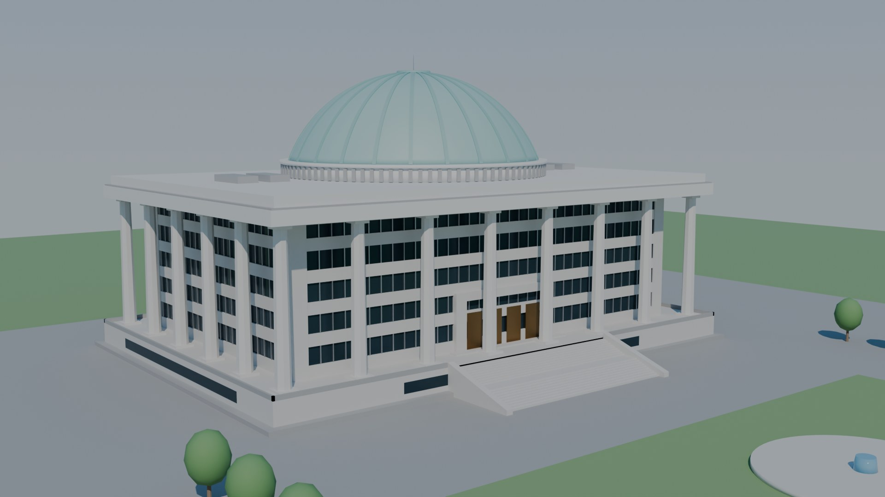
첫 버전 업그레이드렌더 11장
스크립트의 기본 샷 목록을 Cycles로 렌더했습니다. 누르면 크게 봅니다(화살표 키로 넘기기, Esc로 닫기).
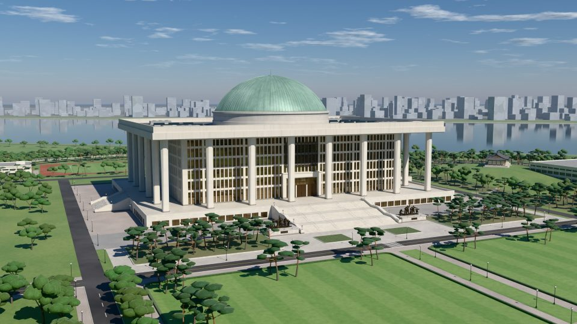
3/4 뷰 · 낮앞 왼쪽 위에서 본 본관. 열주 뒤 11 m 회랑과 처마 그림자, 녹청 돔. 뒤로 한강. 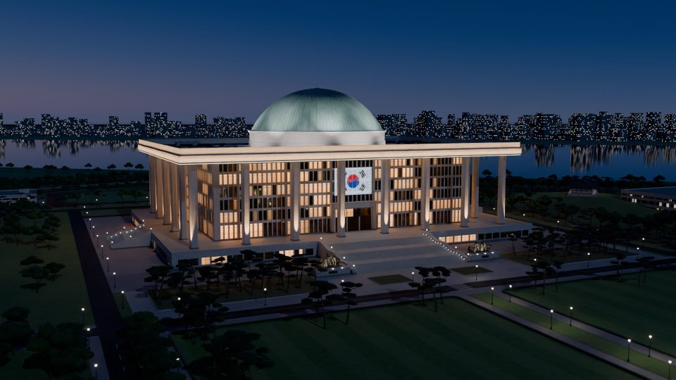
3/4 뷰 · 밤같은 자리의 블루아워. 2007년 경관조명(열주 업라이트, 처마 워시, 돔 투광)과 LED 그릴의 태극기. 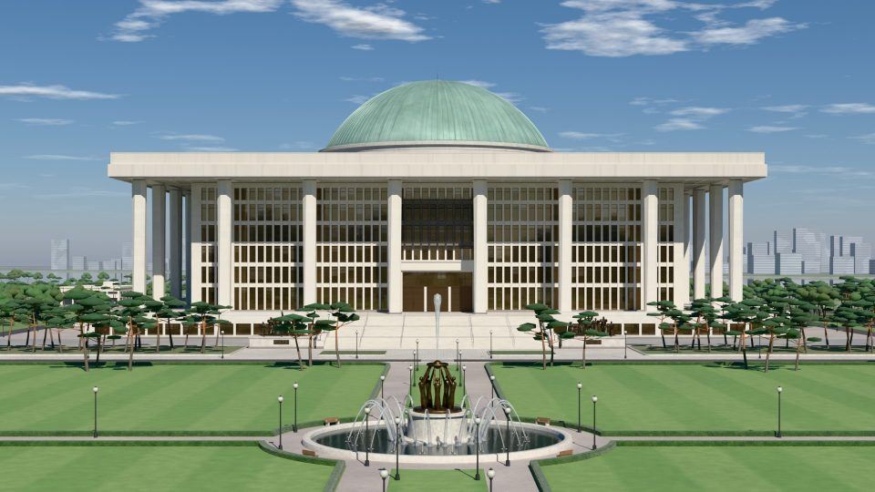
중심축 · 낮분수 너머에서 축을 따라 본 정면. 분수 가운데 ‘평화와 번영의 상’, 계단 발치 양쪽에 청동 군상. 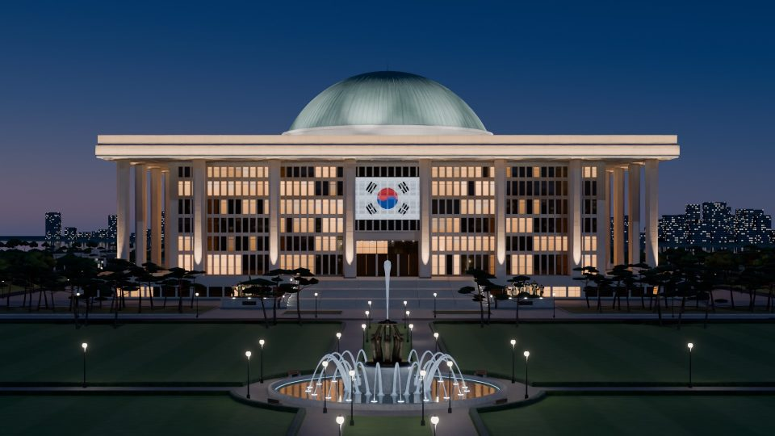
중심축 · 밤같은 축의 밤. 켜진 창과 가로등, 분수 조명, 정면 위층 가운데의 태극기. 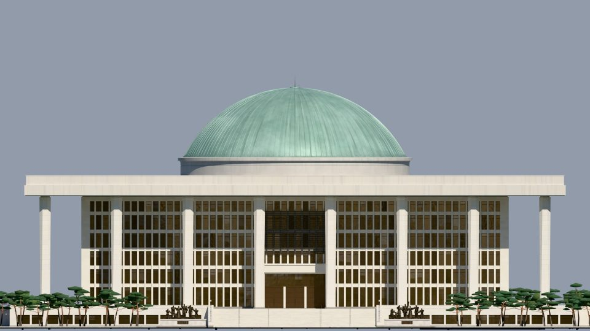
정면 입면직교 투영. 전면 열주 8개, 기단 위 6개 층, 지면에서 돔 꼭대기까지 69.19 m. 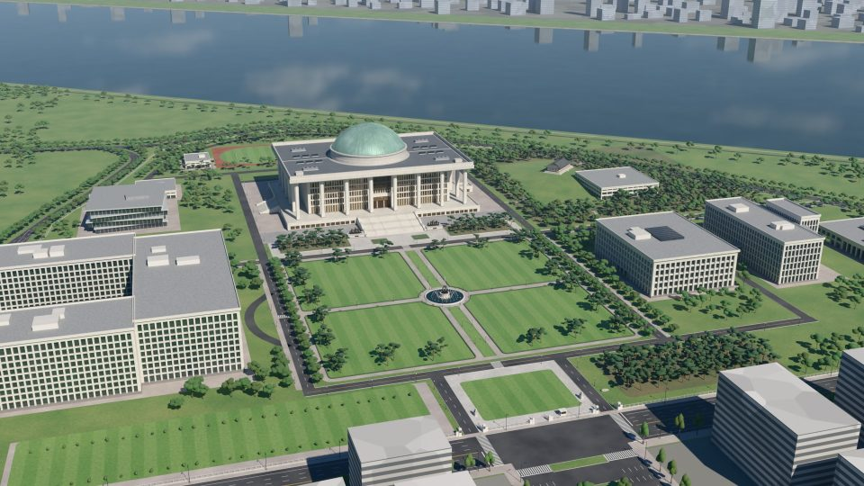
캠퍼스 항공잔디광장 네 칸과 분수, 국회도서관·의정관·의원회관, 뒤로 국회운동장과 한강. 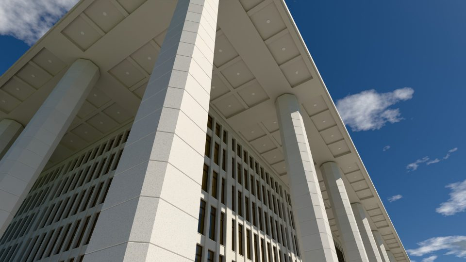
회랑 아래모서리에서 올려다본 열주와 처마. 사각에서 팔각으로 넓어지는 기둥, 회랑 천장 격자. 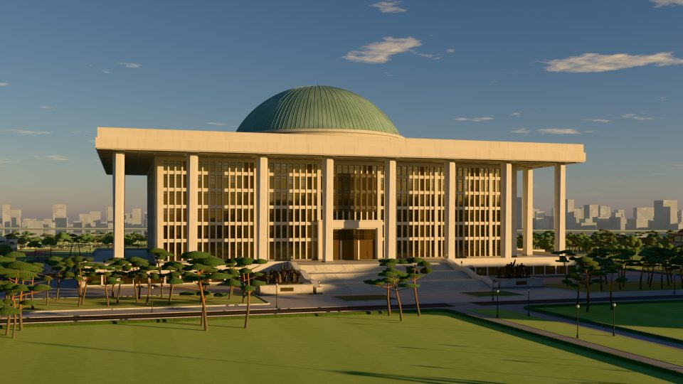
이른 아침동쪽의 낮은 해(고도 7.5°)가 정면을 비스듬히 비춥니다. 해 위치는 서울 기준. 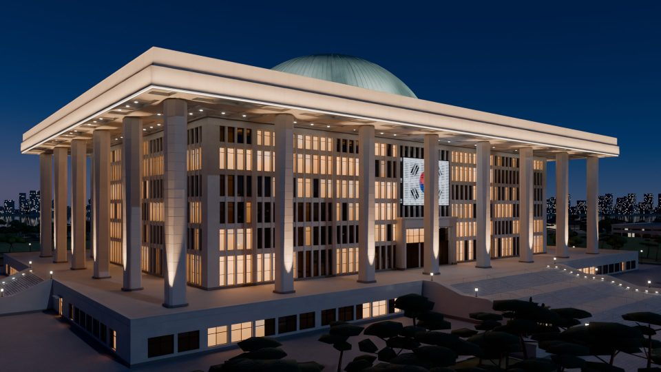
모서리 · 밤앞 왼쪽 모서리 가까이. 열주를 비추는 업라이트, 처마 끝 LED 띠와 회랑 천장 다운라이트. 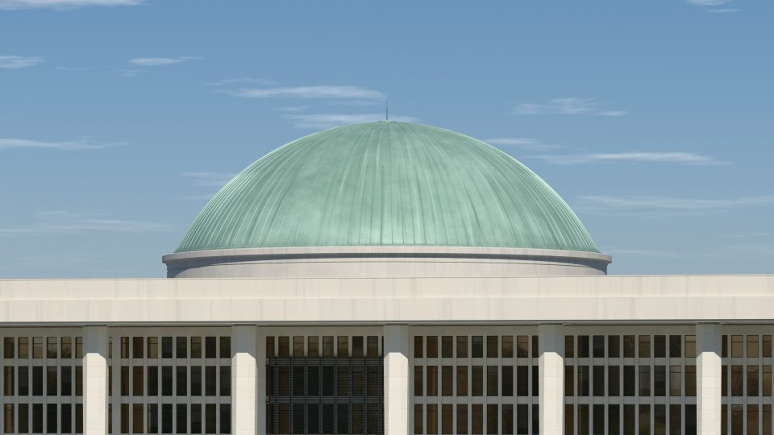
돔망원으로 당긴 돔. 높이 20 m의 낮은 구면 캡, 동판 스탠딩 심과 녹청. 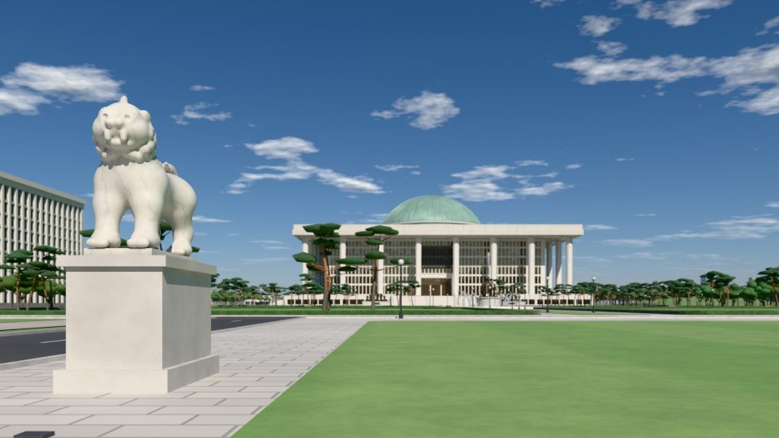
해태상정문 안쪽 왼쪽 해태상 너머로 멀리 보이는 본관.
{kind=link}
{kind=link}
{kind=link}
{kind=link}
{kind=link}
{kind=link}
{kind=link}
{kind=link}
{kind=link}
{kind=link}
{kind=link}
실제 건물과 맞춘 것
자료에 나오는 치수는 그대로 넣었고, 자료가 없는 부분은 사진을 보고 정한 추정값입니다. 근거 칸에서 구분합니다.
자료문헌·기록에 나온 값지도OpenStreetMap 윤곽에서 잰 값추정사진을 보고 정한 값
| 항목 | 값 | 모델에서 | 근거 |
|---|---|---|---|
| 전체 높이 | 69.19 m | 지면 → 기단면 5.44 m, 기단면 → 돔 꼭대기 63.75 m. 흔히 말하는 ‘70 m’. | 자료한국민족문화대백과 |
| 본체 평면 | 122 × 81 m | 열주 뒤 본체 외벽의 크기로 읽었습니다. 아래 ‘평면과 높이’ 참고. | 자료국가기록원·언론 지도해석 근거 |
| 열주 | 24개 · 32.5 m | 전면 8개는 팔도, 모두 24개는 24절기. 밑은 모서리를 깎은 사각(2.8 m), 위로 갈수록 넓어져 꼭대기는 정팔각(3.3 m). | 자료개수·높이 추정단면 폭 |
| 회랑 | 깊이 11 m | 본체 외벽에서 열주 중심선까지. 열주 칸은 약 20.6 m로 거의 정사각형. | 지도윤곽에서 역산 |
| 처마 | 156 × 115 m | 몰딩 없는 평평한 석재 슬래브. 밑면 높이 37.94 m, 두께 3.2 m. | 지도평면 추정두께 |
| 기단 | 5.44 m · 164 × 123 m | 화강석 받침. 안에 지상 1층이 들어 있고 둘레에 창 띠. | 자료높이 지도평면 |
| 대계단 | 너비 50 m | 기단면까지 34단(챌면 0.16 m), 넓은 참 두 곳. | 자료너비 추정단수·참 |
| 돔 | 밑지름 64 m · 높이 20 m | 반구가 아닌 낮은 구면 캡(높이/지름 0.31). 무게 약 1,000 t, 철골 위 동판 마감. | 자료국가기록원·언론 |
| 돔 마감 | 동판 · 녹청 | 자오선 방향 스탠딩 심 128줄, 민트빛 녹청과 빗물 얼룩. | 추정심 수·색 |
| 층 | 기단 위 6개 층 | 층고 6.5 m 한 층과 5.2 m 다섯 층, 합 32.5 m = 열주 높이. | 자료층고 5.2~6.5 m 추정배분 |
| 입면 | 화강석 핀 · 청동빛 유리 | 열주 한 칸을 10모듈(약 2.06 m)로 나눈 촘촘한 세로 핀, 층마다 얇은 석재 띠. | 추정창 리듬 |
| LED 그릴 | 2007년 | 정면 위층 가운데 격자. 낮에는 짙은 청동, 밤에는 태극기를 띄웁니다(약 18.4 × 12.4 m). | 추정크기 |
| 방위 | 정면 142° (남동) | 물리 하늘과 서울의 실제 해 위치로 낮(오전), 이른 아침, 블루아워를 비춥니다. | 지도건물 윤곽·축 |
| 캠퍼스 | 지도대로 배치 | 잔디광장 네 칸, 분수, 해태 한 쌍, 청동 군상, 도서관·의원회관·의정관·박물관·소통관, 사랑재, 한강. | 지도배치 추정분수·해태 크기, 이웃 건물 매스 |
평면과 높이를 어떻게 읽었나
- 기단164 × 123
- 처마156 × 115
- 열주 중심선 · 24개144 × 103
- 본체 외벽122 × 81
- 돔 밑지름64
자료마다 ‘122 × 81 m’가 나오지만 무엇을 잰 값인지는 적혀 있지 않습니다. 첫 버전은 이것을 열주 중심선으로 읽었고, 이번에는 열주 뒤 본체 외벽으로 읽었습니다.
OpenStreetMap의 건물 윤곽(처마 약 156 × 115 m, 기단 약 164 × 123 m, 돔 66 m)과 공개된 연면적 81,444 m²가 모두 이 해석과 맞습니다. 그러면 회랑 깊이는 11 m, 열주 칸은 약 20.6 m로 거의 정사각형이 됩니다.
확정된 도면을 본 것은 아니므로 해석입니다. 스크립트 맨 위의 PLAN_BASIS = 'colonnade'로 바꾸면 예전 해석으로 다시 짓습니다.
높이 자료는 두 값입니다. 지면에서 기단면까지 5.44 m, 기단면에서 돔 꼭대기까지 63.75 m. 합이 69.19 m이고, 흔히 말하는 ‘70 m’가 이것입니다.
열주 32.5 m와 돔 높이 20 m도 자료에 있으니 그 사이에 남는 것은 11.25 m입니다. 이것을 처마 슬래브 3.2 m, 파라펫 2.8 m, 돔 받침 5.25 m로 나눴습니다. 추정 이 배분은 사진을 보고 정했습니다.
열주 뒤 6개 층은 층고 6.5 m 한 층과 5.2 m 다섯 층으로 열주 높이를 그대로 채웁니다.
코드로 짓기
모든 형상은 build_national_assembly.py 한 파일이 만듭니다. Blender 4.2 이상, 또는 pip의 bpy 5.x로 돌아갑니다.
# 1) Blender GUI: Scripting 탭에서 파일을 열고 ▶ 실행 (현재 씬을 비우고 낮 장면을 만듭니다)
# 2) Blender 헤드리스
blender -b -P build_national_assembly.py -- --out ./out --blend --glb --render
# 3) Blender 없이 (pip의 bpy 휠)
pip install bpy
python build_national_assembly.py --out ./out --blend --glb --render자주 쓰는 조합
# 치수 검사만 (높이·돔·열주 수 등, 어긋나면 종료 코드 1)
python build_national_assembly.py --validate
# 밤 장면 두 컷만 JPEG로, 빠르게
python build_national_assembly.py --render --shots night:hero,night:axis --format jpg --samples 64
# 주변 부지 없이 건물만, 이른 아침 장면을 .blend로
python build_national_assembly.py --blend --tod golden --no-site
# 임시 카메라로 대계단 클로즈업 (좌표는 Blender 기준, 정면이 -Y)
python build_national_assembly.py --render --cam stair=0,-130,6/0,-80,4/35 --shots day:stair옵션
| 옵션 | 하는 일 |
|---|---|
| --out DIR | 결과물 폴더 (기본 ./out) |
| --blend | national_assembly.blend 저장 |
| --glb | 웹용 GLB 세 개(본관 낮·밤, 캠퍼스)와 hotspots.json, env_night.hdr. Draco 압축 (--glb-scopes, --no-draco) |
| --render | 기본 샷 11장을 Cycles로 렌더 (--samples 기본 128, --size 기본 1920x1080, --format png|jpg) |
| --shots LIST | 렌더할 샷. 시간대:카메라를 쉼표로 잇습니다.시간대 day golden night카메라 hero front aerial axis colonnade dome haetae golden |
| --tod day|golden|night | GUI와 --blend 장면의 시간대 (기본 day) |
| --no-site | 잔디·광장·나무·이웃 건물 같은 주변 부지를 빼고 건물만 |
| --validate | 높이 69.19 m, 돔 64 m, 열주 24개, 기단 5.44 m 등을 검사하고 실패하면 종료 코드 1 |
| --cam name=x,y,z/tx,ty,tz[/lens] | 임시 카메라 추가 (여러 번 가능). --shots day:name으로 렌더 |
| --flat | 렌더 전에 재질을 GLB 대표색으로 바꿔 웹에서 보일 모습을 미리 봅니다 |
12개 섹션
스크립트는 섹션 12개를 번호 순서로 이어 붙인 한 파일입니다. 파일 안에서 섹션마다 머리 주석으로 나뉩니다.
00_header공유 치수, 좌표계와 방위, 평면 해석10_core장면 초기화, 재질 노드·bmesh 도우미20_materials화강석·유리·금속·청동 절차적 재질30_site지형과 한강, 차로, 잔디광장, 분수, 나무35_landmarks해태, 정문, 청동 군상, 이웃 건물, 사랑재40_podium기단, 대계단, 옆 계단, 기단 파라펫50_body본체 외벽, 화강석 핀, 출입구, LED 그릴60_colonnade열주 24개, 처마, 회랑 천장, 옥상70_dome돔 받침, 셸, 동판 심, 녹청80_lighting물리 하늘, 해 위치, 밤 조명, 카메라85_export웹용 GLB 세 개와 핫스팟 앵커90_main빌드 순서, 치수 검사, 렌더, 명령줄
내려받기
GLB는 Draco로 압축되어 있습니다. Blender와 대부분의 glTF 뷰어에서 바로 열립니다.
- national_assembly.blend낮 장면. 절차적 재질, 조명, 카메라 포함
- national_assembly.glb본관 · 낮. 위 뷰어의 기본 모델
- national_assembly_night.glb본관 · 밤. 창·LED·조명이 발광 재질
- national_assembly_campus.glb캠퍼스 전체 · 낮
- build_national_assembly.py모델을 만드는 스크립트 한 파일약 7,900줄
- hotspots.json뷰어 지점 앵커 (위치·법선·카메라)앵커 13개
소스와 이력은 GitHub에 있습니다.
무엇이 바뀌었나
첫 버전(v1)은 치수만 맞춘 단순한 덩어리였습니다. 이번 버전에서 달라진 점입니다.
- 평면첫 버전:122 × 81 m = 열주 중심선지금:122 × 81 m = 본체 외벽, 회랑 11 m (지도 윤곽과 맞춤)
- 높이첫 버전:어림 배분으로 70 m지금:기단 5.44 m + 63.75 m = 69.19 m
- 열주첫 버전:위로 가늘어지는 팔각 기둥과 주두지금:사각에서 팔각으로 넓어지는 기둥, 주두 없음, 돌 드럼 줄눈
- 본체첫 버전:기단 위 5개 층, 창 띠지금:기단 위 6개 층, 촘촘한 화강석 핀과 청동빛 유리
- 돔첫 버전:높이 22 m 캡, 리브 24개지금:높이 20 m 낮은 캡, 스탠딩 심 128줄, 녹청
- 대계단첫 버전:46 m, 단면을 밀어낸 한 덩어리지금:50 m, 34단과 참 두 곳
- 빛첫 버전:그라데이션 하늘과 태양광 하나지금:물리 하늘, 정면 142°, 서울의 실제 해 위치. 이른 아침과 블루아워
- 밤첫 버전:없음지금:2007년 경관조명과 LED 그릴 태극기
- 부지첫 버전:잔디, 광장, 분수, 가로수지금:캠퍼스 전체: 분수와 평화와 번영의 상, 해태, 애국애족의 군상, 이웃 건물, 사랑재, 한강
- 코드첫 버전:한 파일 약 650줄, 함수 25개지금:약 7,900줄, 12개 섹션, 치수 검사(
--validate), 샷 목록 렌더 - 웹첫 버전:GLB 한 개, 자동 회전지금:낮·밤·캠퍼스 GLB, 지점 13곳, 시점 버튼, Draco 자체 호스팅